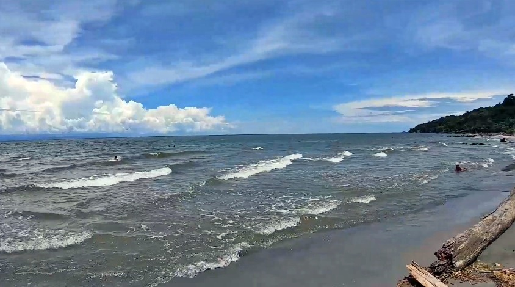
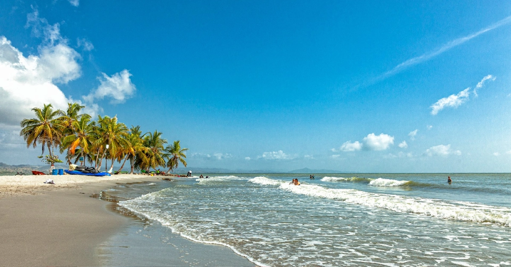
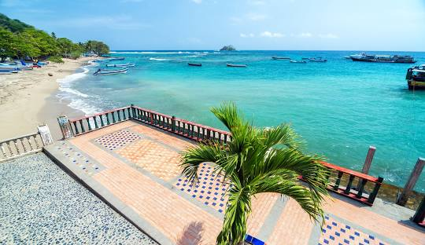

Playa El Mirador
Famosa por sus atardeceres y ambiente caribeño.
📍 Centro de Necoclí
📞 +57 310 111 2233

Playa del Caribe
Arena blanca y aguas tranquilas, ideal para familias.
📍 Vía Necoclí – Arboletes
📞 +57 311 222 3344

Playa capurgana
Ambiente relajante con palmeras y brisa marina.
📍 Zona costera de Necoclí
📞 +57 312 333 4455